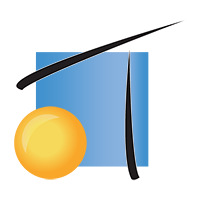
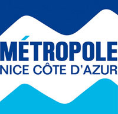

<ion-header>
  <ion-navbar color="orange">
    <button ion-button menuToggle>
      <ion-icon name="menu"></ion-icon>
    </button>
    <ion-title>Expérience</ion-title>
  </ion-navbar>
</ion-header>

<ion-content padding>
  <ion-card>
    <ion-card-header>
      <div class="cardExperience" style="background-color:#6ab344;">Développeur Android stagiaire</div>
    </ion-card-header>
    <ion-avatar item-left>
      
    </ion-avatar>
    <ion-card-content style="float:left; margin-left:60px;">
      <span>Télémaque</span>
      <br>
      <hr style="margin-top:10px;">
      <span>22 mai - 31 août 2017</span>
    </ion-card-content>
  </ion-card>

  <ion-card>
    <ion-card-header>
      <div class="cardExperience" style="background-color:red;">Techinicien réseau stagiaire</div>
    </ion-card-header> 
    <ion-avatar item-left>
        
      </ion-avatar>
    <ion-card-content style="float:left; margin-left:60px;">
      <span>DSI de la Métropole Nice Côte d'Azur</span>
      <br>
      <hr style="margin-top:10px;">
      <span>Mai 2015 - Juillet 2015</span>
    </ion-card-content>
  </ion-card>
</ion-content>